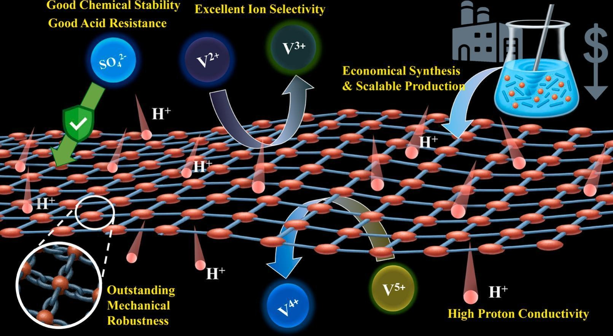

Scholarly article
MOF-& COF-integrated composite separators/membranes: innovations for sustainable and high-performance redox flow batteries
Author affiliations and roles
- aChang Gung University
- bChang Gung Memorial Hospital
- cMing Chi University of Technology
Separation and Purification Technology, 376, 134157 (2025).
Research topic: Redox Flow Batteries
Abstract
Advancements in membrane engineering are perceived as the primary concern for leading redox flow batteries (RFBs) to large-scale energy storage technology. Separators/Membranes that offer balanced trade-offs between permeability and selectivity, with controlled wettability, solvent resistance, and robustness, have emerged as promising materials for separation in RFBs. Traditional ion exchange membranes (IEMs), like Nafion, are prone to high permeability to active species and high costs, which limit their commercial viability and the overall performance of RFBs. Over the past decade, the development of non-ionic/porous membranes has garnered tremendous research attention due to their industrial-level properties, including porosity and flexibility, as well as advancements in fabrication methods and the principle of operation, such as size-based sieving effects. In this context, recent research has focused on intrinsic porous materials, such as covalent organic frameworks (COFs) and metal-organic frameworks (MOFs), for membrane fabrication due to their modifiability in pore channels, ion selectivity, and design flexibility. However, this technology is still in its early stages. This review summarizes recent advances in MOF/COF separators for RFBs, providing insights into existing challenges (e.g., desired pore size, processability, or scaling) and fundamental strategies (such as functional side chain modification) to achieve targeted functionality. Apart from the intrinsic features of frameworks, optimized structural properties (e.g., pore size) and performance evaluation are crucial to improve the quality of the separator, which are discussed in detail. This review provides valuable insights and can guide future research directions for designing nextgeneration MOF/COF separators in RFBs.
Highlights
- MOF/COF separators offer tunable porosity for selective ion transport in RFBs.
- Functional design enables control over ion selectivity and permeability.
- New separators improve ion transport and address key RFB performance issues.
- Eco-friendly synthesis and green linkers enhance separator sustainability.
- Structure–property–performance insights guide next-gen RFB separator design.
Graphical Abstract

Keywords
OpenAlex citation history
Citations by year
- 12025
- 52026
View citation counts as a table
| Year | Citations |
|---|---|
| 2025 | 1 |
| 2026 | 5 |
OpenAlex citing works
Articles citing this work
6 citing articles with DOI, from 6 records indexed by OpenAlex.
Surface-engineered Nafion membranes with an ion-sieving layer for high-performance vanadium redox flow battery ↗
Journal of Colloid and Interface Science · vol. 724, no. Pt 2, pp. 141151, 2026
Advances in covalent organic frameworks and membranes composed of polymers of intrinsic microporosity for a next-generation redox flow battery ↗
Chemical Engineering Journal · vol. 536, pp. 175821, 2026
Covalent Organic Framework Nanosheets: Synthesis, Membrane Fabrication, and Separation Applications ↗
Separation and Purification Technology · vol. 395, pp. 137717, 2026
Metal–Organic Frameworks as Multifunctional Platforms for Chemical Sensors: Advances in Electrochemical and Optical Detection of Emerging Contaminants ↗
Processes · vol. 14, no. 6, pp. 886, 2026
DOI: 10.3390/pr14060886
Recent advancements in membranes for vanadium redox flow batteries ↗
Journal of Power Sources · vol. 670, pp. 239489, 2026
Innovations and prospects on functional membrane design for advanced redox flow batteries ↗
Applied Energy · vol. 406, pp. 127316, 2025